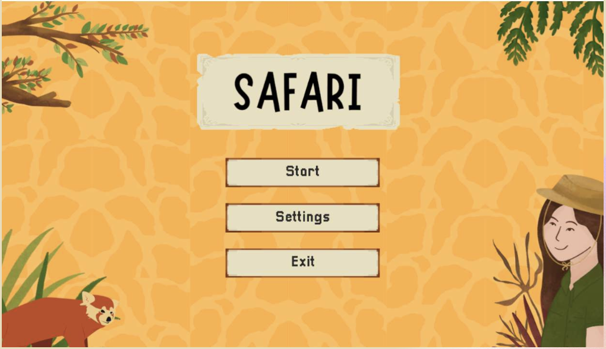
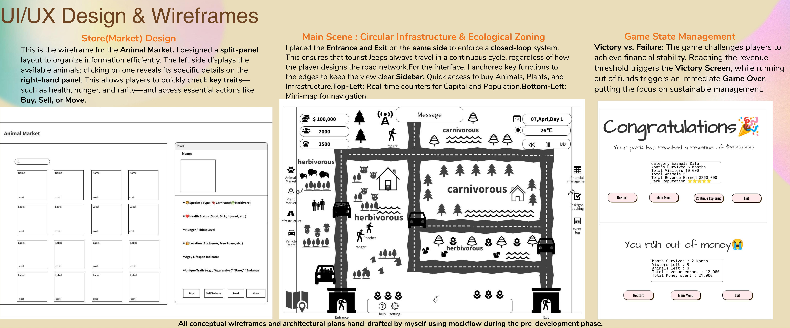
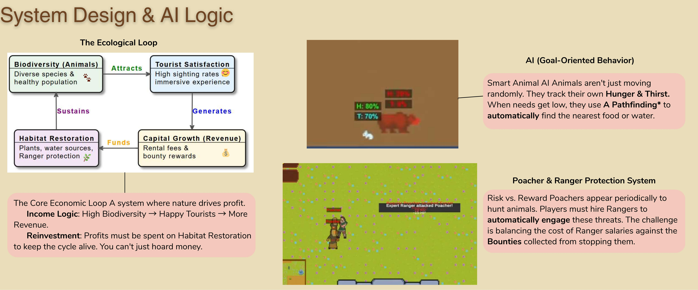
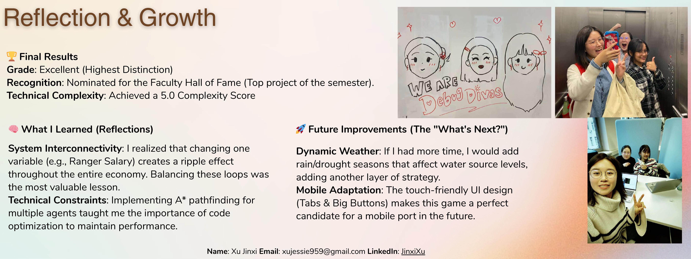

Managing an ecosystem, not just a zoo.
Players build habitats and infrastructure while sustaining animal welfare and a viable tourist economy. Biodiversity makes happier visitors, generating revenue for restoration.
Project / Unity · Product & Engineering
A 2D management game where wildlife, visitors, risk and revenue are connected in one living system.
Players build habitats and infrastructure while sustaining animal welfare and a viable tourist economy. Biodiversity makes happier visitors, generating revenue for restoration.
I led a three-person team through Agile/Scrum, backlog grooming and UML planning. I also built the tilemap architecture, A* pathfinding, economic logic and goal-oriented animal AI.
The UI centres fast decisions: a central market, information panels, minimap and edge-anchored controls that keep the park visible.



